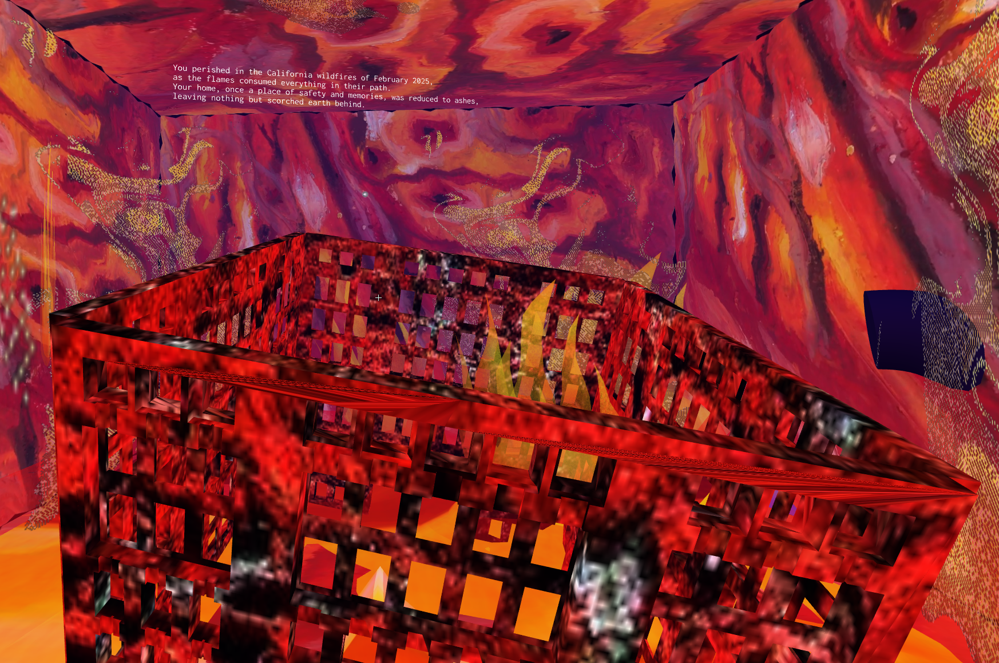
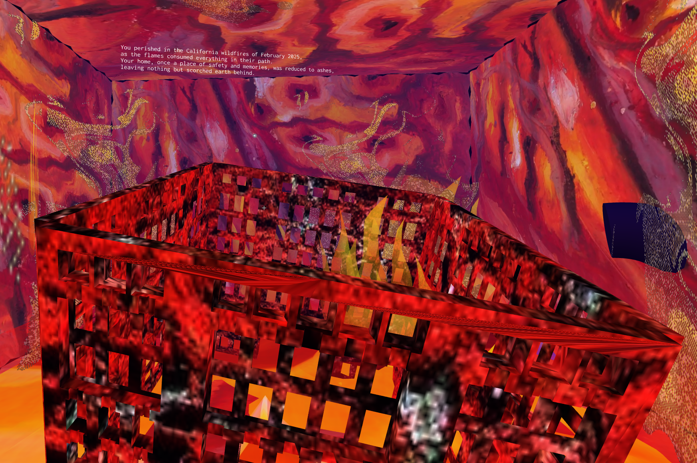

I find this exhibit to be more unsettling than traditional art pieces/ exhibits in musuems, as there is usually a message or reason to their creations, whether a form of artistic expression from the artist themselves deriving from a traumatic expreince in their life, critque on human aspects, or a social issue. Meanwhile this art piece is just
surreal experience in trying to make sense of it, more or less being true to it's title of a "Brainrotting Wastleland". Almost everything within the movable city is distortation of objects in reality, such as the few structures that resemble humaniod beings of differening colors, or the pink-reddish house-like structure that resembles a house, with
smaller details mixed in with teeth or veins. Doesn't help that there are weird choices for the city's scoring, ranging from a simple note playing on repeat to just bodily-like noises or growling from approaching some areas of the digital city, as well as the liminal space of the exhibit, with the sky being a grey-ish color and fog covering up farther
away structures when nagivagting through the digital city. Creating an uncanny feeling as you don't know how far the city stretchs and the only surrounding things are twisted versions of things you see on a daily basis. Anopther element adding to the distortion of reality feeling is the few page-like walls that floating within the city, one of them
showing what I presume is parody of the Cathlotic faith, with a drawing of a church with an eye over it's front door and labeled "Cis Hetero Catholic Church", with "my sin" written around the church as a wiggly entity is over looking the building. Don't necssary know if this is trying to make a statement of Christanity being against same sex relationships
or another critque of recent times that want to vilify the sterotypical white heterosexual male of the United States for how the country treated other enthic groups in tthe past with the labeling of "Cis Hetero Catholic Church". Either way, this exhibit really lives up to its title concerninng to the decrease of mental cognition amongst the present generation,
espically the youth of today, with most of their time being on their phones consuming short form, low value digital content from social media, primarily Tiktok and Youtube. I point to these platforms specificially because of the rapid growth and success of Tiktok led to the other platform sites implementing their own form of short form content hubs to
ride the success that Tiktok had and Youtube massivily pushing for Youtube Shorts for their own profit and holding the greatest daily audience that uses their services for content consumption. Now with the rapid increase of luxeries at a younger age, like having a smart phone, the younger children can more easier just be glued to the phones in their hands
without learning of self-restraint or any form of digital safety when it comes to what content to consume online, with an increasing number just being content-farm channels or a.i. channels. This being exemplified through the "Skibidi Toilet" back in 2023, where a series of heads within toitets taking to take over the world had been the most popular thing
on Youtube at the time, getting so popular to get 26 seasons on Youtube. Probably the exhbiit being a look into one's mentality that has been over taken by brainrot, with how everything is just a weird deformation of logically things in the world. Also the lack of meaning to this exhibit really adds to the uncanny feling when traveling inside, as I tried to
see if there was a reason to the exhibit's creation online, with no results, with the exhibit's description just advertising the release of the exhibit.
I really like how this art project tries to encapsulate the feeling of being a person that was trapped in the locations, and time, where one of the differing natural disasters included in the artwork had occurred. This was achieved through the use of stimulating each disaster as a 3D box with each box being reflections of each natural disasters
they are representing, for example the box representing the 2025 California wildfires has a wavering texture to it with only the warm colors of the color wheel being on and within the box, like the box itself was set on fire. This is in contrast to the box representing the 2021 Zhengzhou flood, being a water-like texture and ripping effect on the
outside of the box, like something being dropped into a body of water and the small waves that form from the impact that push out to the rest of the body of water. Additionally, the inside of the boxes have audio and visuals that would be representative of ach disaster. with the Zhengzhou box entirely raining on the inside of it, with the audio of
heavy rain playing within the box. The only other thing inside the box being the bottom appearing like the surface of the sea. This being contrasted to the previously mentioned wildfires box, with the only object being a building in ruin, covered in flames, with a few fire animations surrounding it. The audio reflects this being only a raging fire
that loops while inside the box. Sort of enjoy that some disasters that were man-made are also in the artpiece, such as one box being a representation of the Great Smog of 1952 in London, where a heavy smog, visible haze of air pollution, covered over the entire city of London for several days, being so thick that some citizens reported they were
unable to see past 3 feet in front of them. Many died because of the pollution, with the event caused by the industrialization of the location, alongside little care towards air quality control, resulting in decades of smoke to build up for years, until that stretch of 5 days in December for those unlucky enough to experience this.
This artwork hits home deeply because for all human achievements since that ancient past of the human race on Earth, we have continued to evolve and find ways to survive and thrive into prosperous civilizations throughout human history. From the initial founding of fire before written history to now living on a majority of the planet in vast countries,
with some having weapons of mass destruction that could destroy the very planet humans built. Additionally being able to create vaccines for diseases and viruses, including some of the most deadly, like the bubonic plague (Black Death), or completely eradicated like Smallpox back in 1980. Through all of these accomplishments it would seem that the
human race is unstoppable, being able to overcome any adversity that may come across, except for disasters from the natural world. Raging wildfires, earthquakes, intense flooding and erupting volcanoes are some examples of natural disasters, which can cause vast amounts of destruction in their wake in the matter of mere moments. The only things that
were done to react to natural disasters, were warning systems and equipment to track if a natural disaster was going to occur and how deadly they might be, but never to completely prevent the upcoming tragedy. Most of these are too quick and destructive to completely prevent across the world, the best that can be done is having better measures to track
these occurrences and warning those in the affected area as much as possible. Take the July Texas flood earlier this year, with one timelapse video concerning the event showcased a small river connected to a road that was completely flooded by raging water in under 3 minutes and still rising. Even more terrifying is that in the same timelapse, any trees
in the way of the flood are also being uprooted and carried away in the flood as well. This showcasing just how destructive and cruel the environment we live in can become in the matter of moments and how much of our grapple on the planet can be undone, several times faster than us building a place to live there
 
